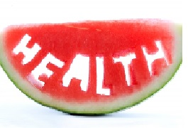
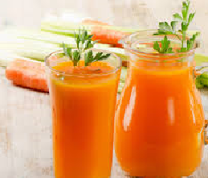
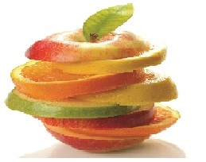

-

-

-

- 
- 
- 

Secrets of Healthy eating
Are Calories Bad for You?
Calories aren't bad for you. Your body needs calories for energy. But eating too many calories and not burning enough of them off through activity — can lead to weight gain. You can find out how many calories are in a food by looking at the nutrition facts label. The label also will describe the components of the food — how many grams of carbohydrate, protein, and fat it contains. Here's how many calories are in 1 gram of each: • carbohydrate — 4 calories • protein — 4 calories • fat — 9 calories Keep in check of your diet Calories summary List.Understanding calories
When we eat and drink more calories than we use up, our bodies store the excess as body fat. If this continues over time we may put on weight. As a guide, an average man needs around 2,500kcal (10,500kJ) a day to maintain a healthy body weight. For an average woman, that figure is around 2,000kcal (8,400kJ) a day. These values can vary depending on age, size and levels of physical activity, among other factors. You can check whether you're a healthy weight by using our BMI healthy weight calculator.
Calories and energy balance
Our bodies need energy to keep us alive and our organs functioning normally. When we eat and drink, we put energy into our bodies. Our bodies use up that energy through everyday movement, which includes everything from breathing to running. To maintain a stable weight, the energy we put into our bodies must be the same as the energy we use by normal bodily functions and physical activity. An important part of a healthy diet is balancing the energy you put into your bodies with the energy you use. For example, the more physical activity we do the more energy we use. If you consume too much energy on one day, don't worry; just try to take in less energy on the following days.
BASAL METABOLIC weight
BASAL METABOLIC weight or per square RATE calories released per kilogram of body meter of body surface per hour. Basal metabolic rate (BMR) is the amount of energy expended while at rest in a neutrally temperate environment, in the post-absorptive state (meaning that the digestive system is inactive, which requires about twelve hours of fasting).The release of energy in this state is sufficient only for the functioning of the vital organs, such as the heart, lungs, brain and the rest of the nervous system, liver, kidneys, sex organs, muscles and skin. BMR decreases with age and with the loss of lean body mass. Increasing muscle mass increases BMR.